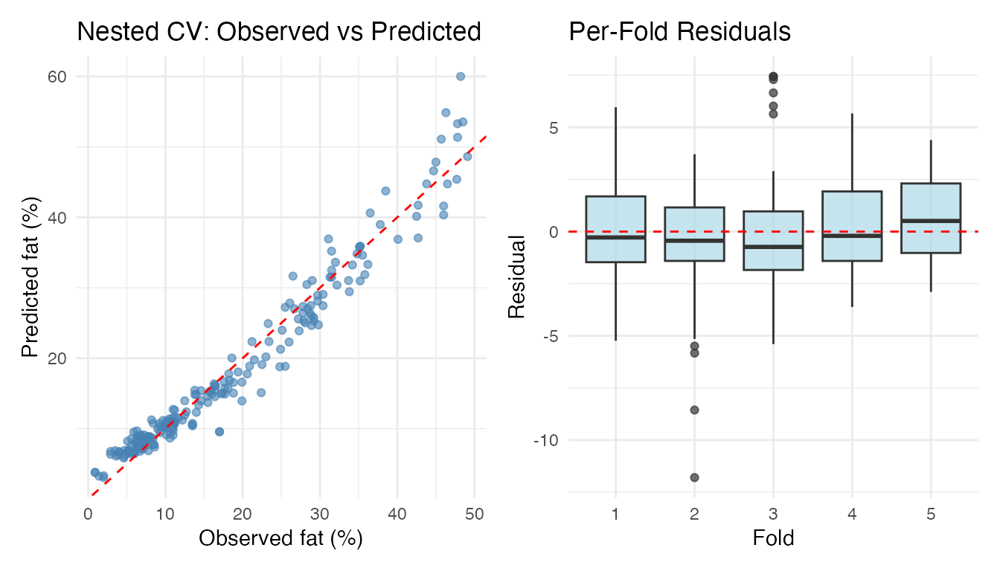
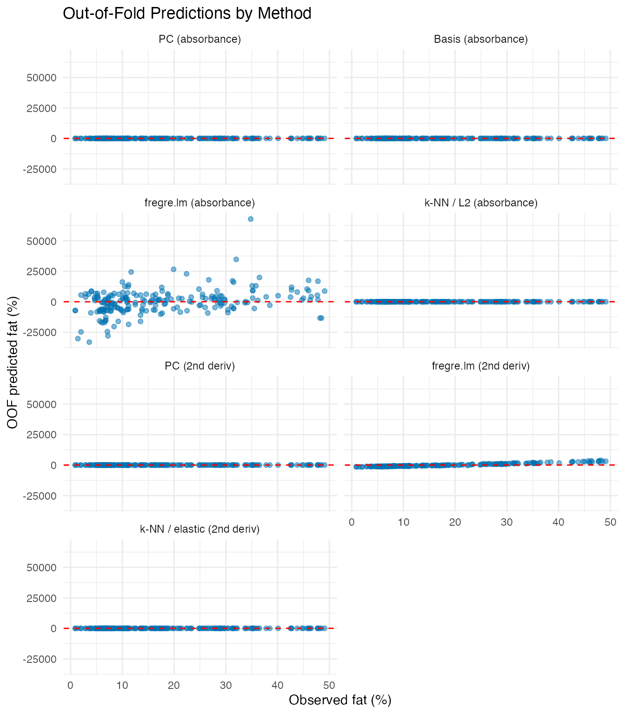
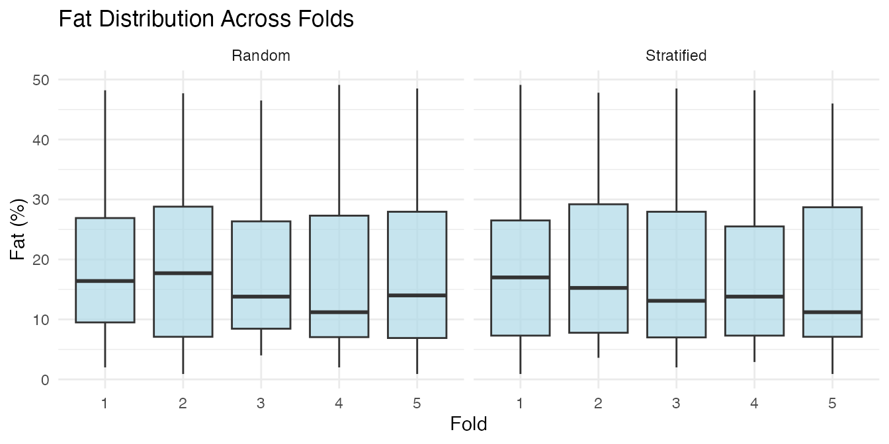

Cross-Validation: Honest Model Comparison with OOF Predictions
Source:vignettes/articles/example-cross-validation.Rmd
example-cross-validation.RmdThe individual *.cv functions
(fregre.pc.cv, fregre.basis.cv,
fregre.np.cv) tune hyperparameters but don’t produce
out-of-fold (OOF) predictions — predictions where each
observation is predicted exactly once, when it sits in the held-out
fold. OOF predictions give an honest estimate of generalisation
performance and are the standard output of a cross-validation
workflow.
cv.fdata() provides a unified framework that wraps
any fit/predict workflow and returns OOF predictions for the
entire dataset.
| Step | What It Does | Outcome |
|---|---|---|
| Data preparation | Load 215 Tecator NIR spectra with fat response |
fdata object ready for regression |
| Basic CV | 5-fold CV with fixed hyperparameters | OOF predictions + RMSE/MAE/R2 |
| Nested CV | Outer 5-fold, inner CV selects ncomp per fold | Unbiased evaluation with automatic tuning |
| Method comparison | Run seven methods on identical fold splits | Fair head-to-head comparison table |
| Visualisation | Observed vs predicted + per-fold residual boxplots | Diagnose prediction quality across folds |
Key result: Nested CV avoids the optimistic bias of evaluating on the same data used to select hyperparameters, giving realistic out-of-sample error estimates.
Tecator Data
The Tecator dataset contains 215 meat samples, each with an absorbance spectrum measured at 100 wavelengths (850–1050 nm) and laboratory-measured fat content. This is the same dataset used in the Tecator regression example.
data(tecator, package = "fda.usc")
absorp_data <- tecator$absorp.fdata$data
wavelengths <- as.numeric(tecator$absorp.fdata$argvals)
fd <- fdata(absorp_data, argvals = wavelengths)
fat <- tecator$y$Fat
n <- nrow(fd$data)
cat("Samples:", n, "\n")
#> Samples: 215
cat("Wavelengths:", ncol(fd$data), "(", range(wavelengths), "nm)\n")
#> Wavelengths: 100 ( 850 1050 nm)
cat("Fat range:", round(range(fat), 1), "%\n")
#> Fat range: 0.9 49.1 %
plot(fd) +
labs(title = "NIR Absorbance Spectra (215 meat samples)",
x = "Wavelength (nm)", y = "Absorbance")
Pre-Processing
Raw absorbance spectra contain baseline shifts. Smoothing with B-splines and taking the second derivative removes these effects and enhances spectral features — we’ll use both representations for cross-validation.
coefs_raw <- fdata2basis(fd, nbasis = 30, type = "bspline")
fd_smooth <- basis2fdata(coefs_raw, wavelengths)
fd_deriv2 <- deriv(deriv(fd_smooth))Basic K-Fold Cross-Validation
Pass any fitting function to cv.fdata and it handles the
fold loop. Every observation is predicted exactly once:
cv_result <- cv.fdata(fd_smooth, fat,
fit.fn = function(fd, y, ...) fregre.pc(fd, y, ncomp = 6),
kfold = 5, seed = 42)
print(cv_result)
#> K-Fold Cross-Validation (cv.fdata)
#> Type: regression
#> Folds: 5
#> Observations: 215
#>
#> Overall metrics:
#> RMSE: 3.164
#> MAE: 2.466
#> R2: 0.938
#>
#> Per-fold RMSE range: [2.785, 3.681]Nested Cross-Validation
When hyperparameters are tuned, evaluating on the same data used for selection gives an optimistically biased error estimate. Nested CV fixes this: the outer folds produce OOF predictions while an inner CV selects optimal parameters on each training fold independently.
cv_nested <- cv.fdata(fd_smooth, fat,
fit.fn = function(fd, y, ...) {
cv_inner <- fregre.pc.cv(fd, y, ncomp.range = 1:15, kfold = 5)
cv_inner$model
},
kfold = 5, seed = 42)
print(cv_nested)
#> K-Fold Cross-Validation (cv.fdata)
#> Type: regression
#> Folds: 5
#> Observations: 215
#>
#> Overall metrics:
#> RMSE: 2.646
#> MAE: 2
#> R2: 0.9567
#>
#> Per-fold RMSE range: [2.197, 3.175]Inspect which ncomp was selected in each outer fold —
different training subsets may favour different complexities:
Comparing Methods on Identical Folds
Because cv.fdata accepts any fit.fn, you
can fairly compare methods by using the same seed (which
fixes the fold assignments):
# Absorbance-based methods
cv_pc <- cv.fdata(fd_smooth, fat,
fit.fn = function(fd, y, ...) fregre.pc(fd, y, ncomp = 6),
kfold = 5, seed = 42)
cv_basis <- cv.fdata(fd_smooth, fat,
fit.fn = function(fd, y, ...) {
cv_inner <- fregre.basis.cv(fd, y,
lambda.range = c(0.001, 0.01, 0.1, 1, 10))
fregre.basis(fd, y, lambda = cv_inner$optimal.lambda)
},
kfold = 5, seed = 42)
cv_lm <- cv.fdata(fd_smooth, fat,
fit.fn = function(fd, y, ...) {
cv_inner <- fregre.lm.cv(fd, y, k.range = 1:15, nfold = 5)
fregre.lm(fd, y, ncomp = cv_inner$optimal.k)
},
kfold = 5, seed = 42)
cv_knn <- cv.fdata(fd_smooth, fat,
fit.fn = function(fd, y, ...) fregre.np(fd, y, type.S = "kNN.gCV"),
kfold = 5, seed = 42)
# Second-derivative methods
cv_pc_d2 <- cv.fdata(fd_deriv2, fat,
fit.fn = function(fd, y, ...) {
cv_inner <- fregre.pc.cv(fd, y, ncomp.range = 1:15, kfold = 5)
cv_inner$model
},
kfold = 5, seed = 42)
cv_lm_d2 <- cv.fdata(fd_deriv2, fat,
fit.fn = function(fd, y, ...) {
cv_inner <- fregre.lm.cv(fd, y, k.range = 1:15, nfold = 5)
fregre.lm(fd, y, ncomp = cv_inner$optimal.k)
},
kfold = 5, seed = 42)
cv_knn_elastic <- cv.fdata(fd_deriv2, fat,
fit.fn = function(fd, y, ...) fregre.np(fd, y, type.S = "kNN.gCV",
metric = metric.elastic),
kfold = 5, seed = 42)
comparison <- data.frame(
Method = c("PC (absorbance)", "Basis (absorbance)",
"fregre.lm (absorbance)", "k-NN / L2 (absorbance)",
"PC (2nd derivative)", "fregre.lm (2nd derivative)",
"k-NN / elastic (2nd derivative)"),
RMSE = round(c(cv_pc$metrics$RMSE, cv_basis$metrics$RMSE,
cv_lm$metrics$RMSE, cv_knn$metrics$RMSE,
cv_pc_d2$metrics$RMSE, cv_lm_d2$metrics$RMSE,
cv_knn_elastic$metrics$RMSE), 3),
MAE = round(c(cv_pc$metrics$MAE, cv_basis$metrics$MAE,
cv_lm$metrics$MAE, cv_knn$metrics$MAE,
cv_pc_d2$metrics$MAE, cv_lm_d2$metrics$MAE,
cv_knn_elastic$metrics$MAE), 3),
R2 = round(c(cv_pc$metrics$R2, cv_basis$metrics$R2,
cv_lm$metrics$R2, cv_knn$metrics$R2,
cv_pc_d2$metrics$R2, cv_lm_d2$metrics$R2,
cv_knn_elastic$metrics$R2), 3)
)
knitr::kable(comparison, caption = "5-fold OOF performance (same folds)")| Method | RMSE | MAE | R2 |
|---|---|---|---|
| PC (absorbance) | 3.164 | 2.466 | 0.938 |
| Basis (absorbance) | 2.898 | 2.234 | 0.948 |
| fregre.lm (absorbance) | 10390.709 | 7114.562 | -668275.125 |
| k-NN / L2 (absorbance) | 8.011 | 5.967 | 0.603 |
| PC (2nd derivative) | 2.374 | 1.808 | 0.965 |
| fregre.lm (2nd derivative) | 1234.593 | 1016.676 | -9433.377 |
| k-NN / elastic (2nd derivative) | 1.737 | 1.178 | 0.981 |
Visualising OOF Predictions
Observed vs predicted and per-fold residual boxplots for the nested CV result:
valid <- !is.na(cv_nested$oof.predictions)
df_pred <- data.frame(
Observed = fat[valid],
Predicted = cv_nested$oof.predictions[valid],
Fold = factor(cv_nested$folds[valid]),
Residual = fat[valid] - cv_nested$oof.predictions[valid]
)
p1 <- ggplot(df_pred, aes(x = Observed, y = Predicted)) +
geom_point(colour = "steelblue", alpha = 0.6) +
geom_abline(intercept = 0, slope = 1, linetype = "dashed", colour = "red") +
labs(title = "Nested CV: Observed vs Predicted",
x = "Observed fat (%)", y = "Predicted fat (%)")
p2 <- ggplot(df_pred, aes(x = Fold, y = Residual)) +
geom_boxplot(fill = "lightblue", alpha = 0.7) +
geom_hline(yintercept = 0, linetype = "dashed", colour = "red") +
labs(title = "Per-Fold Residuals", x = "Fold", y = "Residual")
library(patchwork)
p1 + p2
Comparing OOF Predictions Across Methods
method_levels <- c("PC (absorbance)", "Basis (absorbance)",
"fregre.lm (absorbance)", "k-NN / L2 (absorbance)",
"PC (2nd deriv)", "fregre.lm (2nd deriv)",
"k-NN / elastic (2nd deriv)")
df_oof <- data.frame(
Observed = rep(fat, 7),
Predicted = c(cv_pc$oof.predictions, cv_basis$oof.predictions,
cv_lm$oof.predictions, cv_knn$oof.predictions,
cv_pc_d2$oof.predictions, cv_lm_d2$oof.predictions,
cv_knn_elastic$oof.predictions),
Method = factor(rep(method_levels, each = n), levels = method_levels)
)
ggplot(df_oof, aes(x = Observed, y = Predicted)) +
geom_point(alpha = 0.5, colour = "#0072B2") +
geom_abline(intercept = 0, slope = 1, linetype = "dashed", colour = "red") +
facet_wrap(~ Method, ncol = 2) +
labs(title = "Out-of-Fold Predictions by Method",
x = "Observed fat (%)", y = "OOF predicted fat (%)")
Per-Fold Stability
The fold.metrics data frame shows how performance varies
across folds — large variation can indicate sensitivity to the
particular train/test split:
knitr::kable(cv_nested$fold.metrics, digits = 3,
caption = "Per-fold metrics (nested CV)")| fold | n | RMSE | MAE | R2 |
|---|---|---|---|---|
| 1 | 45 | 2.368 | 1.866 | 0.966 |
| 2 | 44 | 3.012 | 2.055 | 0.945 |
| 3 | 44 | 3.175 | 2.401 | 0.940 |
| 4 | 41 | 2.273 | 1.828 | 0.967 |
| 5 | 41 | 2.197 | 1.828 | 0.969 |
Stratified Folds
By default, cv.fdata uses stratified
fold assignment: the response is binned into quantile groups and
observations are sampled within each bin. This ensures every fold has a
similar distribution of fat content, which matters because the Tecator
dataset has a right-skewed fat distribution.
folds_strat <- fdars::: .create_folds(fat, kfold = 5, type = "regression",
stratified = TRUE, seed = 1)
folds_rand <- fdars::: .create_folds(fat, kfold = 5, type = "regression",
stratified = FALSE, seed = 1)
df_folds <- data.frame(
Fat = rep(fat, 2),
Fold = factor(c(folds_strat, folds_rand)),
Type = rep(c("Stratified", "Random"), each = n)
)
ggplot(df_folds, aes(x = Fold, y = Fat)) +
geom_boxplot(fill = "lightblue", alpha = 0.7) +
facet_wrap(~ Type) +
labs(title = "Fat Distribution Across Folds",
y = "Fat (%)")
Set stratified = FALSE to use purely random assignment
(matching the existing *.cv functions).
Custom Predict Functions
Some models need a custom prediction step. The
predict.fn argument receives the fitted model and new data,
and returns predictions:
cv_custom <- cv.fdata(fd_smooth, fat,
fit.fn = function(fd, y, ...) fregre.basis(fd, y, nbasis = 20, lambda = 0.1),
predict.fn = function(model, newdata) predict(model, newdata),
kfold = 5, seed = 42)
cat("Custom predict RMSE:", round(cv_custom$metrics$RMSE, 3), "\n")
#> Custom predict RMSE: 3.337Summary
| Feature |
*.cv functions |
cv.fdata |
|---|---|---|
| Hyperparameter tuning | Yes (internal) | Via fit.fn wrapper |
| OOF predictions | No | Yes (full dataset) |
| Stratified folds | No | Yes (default) |
| Method-agnostic | No (one per method) | Yes (any fit/predict) |
| Nested CV | No | Yes (compose with *.cv) |
| Per-fold models | No | Yes ($fold.models) |
| Per-fold metrics | No | Yes ($fold.metrics) |
See Also
-
vignette("articles/scalar-on-function")— scalar-on-function regression methods -
vignette("articles/example-tecator-regression")— Tecator regression in depth -
vignette("articles/functional-classification")— classification methods